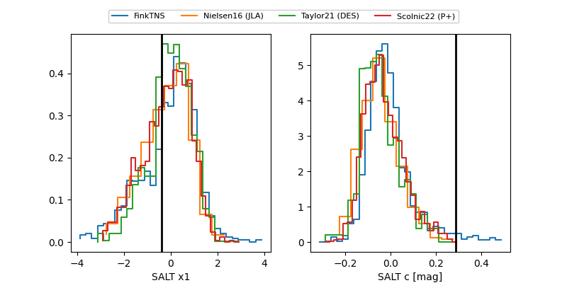

FINK: ZTF25abocxbg
Lasair: ZTF25abocxbg
ALeRCE: ZTF25abocxbg
TNS: 2025xap
YSE: 2025xap
ZTF25abocxbg (ztf,fink)
2025xap (tns,yse)
equatorial (ra, dec) = (1.9603,+5.64748)
galactic (l, b) = (103.4932,-55.57023)

last atlasc=18.97, atlaso=18.88, ztfg=19.76, ztfr=18.95
1 atlasc, 2 atlaso, 7 ztfg, 6 ztfr detections